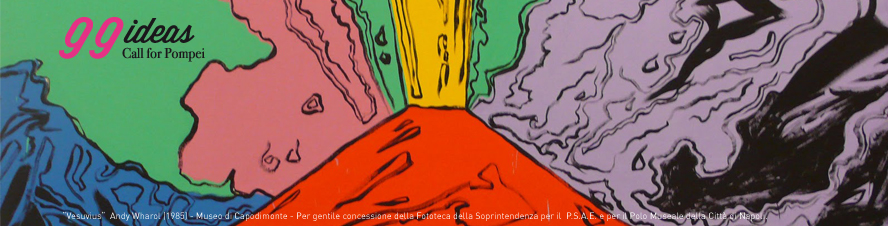

Cosa resta del contest promosso dal Ministero per la Coesione. Il racconto di uno dei vincitori
{kind=link}
di Anna Mariano
Il concorso. Sono passati oramai due anni da quando ho partecipato a 99ideas – Call for Pompei, il concorso di idee per la valorizzazione del territorio vesuviano promosso dal Ministero per la Coesione Territoriale. Nato da un’idea dell’allora ministro Fabrizio Barca, il contest puntava a raccogliere spunti per riqualificare il territorio di Pompei, favorire l’integrazione tra i principali attrattori dell’area e potenziare l’offerta turistica locale. Tutto questo in un’ottica di partecipazione bottom-up, puntando su idee ed esperienze dei cittadini, quelli che vivono quotidianamente il territorio.
Da cittadina di Pompei pensavo di conoscere bene le risorse locali e i punti di debolezza della filiera turistico-culturale. Qui convivono il sacro del Santuario della Beata Vergine del Rosario, tra le mete di culto mariano più note al mondo, ed il profano dei resti dell’antica Pompei, patrimonio UNESCO dal 1997. Pompei è una città che oltre alle attrazioni ha clima, posizione strategica, eccellenze enogastronomiche, ma dove il turismo non è mai diventato volano per lo sviluppo urbano. Una città dove i turisti sono più che altro escursionisti, viaggiatori che si trattengono il tempo necessario alla visita per poi rientrare negli alberghi della costiera o sulle navi da crociera ormeggiate al porto di Napoli.
99ideas mi è subito sembrata una grande opportunità per presentare la mia visione di sviluppo del territorio e del modo in cui allungare la permanenza in città dei visitatori: ho immaginato un evento in grado di creare sinergia tra la città antica e la Pompei moderna, favorendo anche un riavvicinamento dei Pompeiani al bene archeologico
Il progetto. “Archeofest – Un festival dell’Archeologia per Pompei” è il titolo del progetto elaborato in squadra con altri giovani locali. Un vero e proprio Festival dell’Archeologia da tenersi ogni anno, che includesse mostre, convegni, dibattiti, presentazione di studi e pubblicazioni sui temi dell’archeologia. Avevamo pensato anche a una sezione “Scavi 3.0” dedicata all’innovazione in archeologia, con particolare riguardo agli open data, che sono il cuore pulsante di OpenPompei. E poi “Archeo Junior”, dedicata a bambini e adolescenti, percorsi didattici in collaborazione con le scuole cittadine con l’intento di accrescere fin da piccoli la consapevolezza delle straordinarie risorse che offre la nostra Pompei.
Gli eventi si sarebbero svolti in parte all’interno degli scavi, ma soprattutto nel centro cittadino, grazie alla disponibilità di strutture di proprietà comunale e della Chiesa, finora poco valorizzate.
Era aprile 2013 quando, dopo mesi di ricerca ed elaborazione, guardando anche ad altre iniziative di successo (il festival della Letteratura di Mantova o il festival del Giornalismo di Perugia), abbiamo finalizzato la proposta progettuale convinti di aver fatto un buon lavoro, ma non immaginando di avere possibilità di vincita. Infatti, ci sembravano valide molte delle altre proposte presentate. In particolare, mi aveva colpito la proposta di creare un parco/mercato floreale e diversi progetti che includevano innovazioni legate alla realtà aumentata. Mi era piaciuta anche l’idea di riproporre il Grand Tour in chiave contemporanea.
Dopo alcuni mesi, la bella notizia: il nostro progetto era tra le 5 idee vincitrici con il secondo miglior punteggio! Sembrava l’inizio di qualcosa di importante che finalmente avrei potuto offire alla mia città. Sapevo che probabilmente non avrei fatto parte della realizzazione del progetto. Era un punto chiaro della call: ogni idea sarebbe stata trasferita agli enti attuatori. Ma lo ritenevo un aspetto secondario: mi importava, con un pizzico d’orgoglio, aver dato una piccola scossa a un territorio immobile e rassegnato, che vive esclusivamente del passato ma non se ne prende cura, che vede i propri giovani realizzarsi altrove ma non ascoltare ciò che hanno da dire. Sembrava l’inizio di tutto, invece 99ideas finiva lì.
Dopo mesi di attesa e rimandi per la premiazione, che avrebbe dovuto coinvolgere anche il ministro per la Coesione, nel frattempo non più Barca ma Trigilia, e l’allora ministro per i Beni Culturali, Massimo Bray, a dicembre del 2013 venne organizzata al municipio di Pompei una breve cerimonia, alla presenza del sindaco Claudio D’Alessio e di alcuni funzionari di Invitalia. Risale a quella data il nostro ultimo contatto con i promotori di 99Ideas. Anche il sito internet ha cessato di fornire informazioni. L’ultima news risale a quel dicembre. L’account Facebook è addirittura scomparso. E su Twitter l’ultimo aggiornamento dell’account @99_ideas è del 29 aprile 2014. Da allora solo silenzi, salvo un recente articolo dell’Espresso sul naufragio dell’iniziativa.
Un futuro per le idee. Difficile individuare i motivi di quello che possiamo definire un fallimento. Sicuramente l’instabilità politica di quei mesi ha influito. A Pompei, intanto, si è insediata una nuova amministrazione comunale, che ha continuato a tenere chiuso quel cassetto di idee e sogni. Resta un po’ di rammarico per esserci trovati di fronte a un muro. Per quanto ci riguarda, cercheremo di portare avanti la nostra idea in maniera indipendente e slegata da logiche politiche o burocratiche. Rendere consultabili i progetti a potenziali investitori o alle pubbliche amministrazioni, che vogliano replicare o scommettere nella valorizzazione turistica della città, può sicuramente essere una soluzione affinché l’impegno di tanti giovani determinati e competenti non vada completamente perso.
(L’infografica delle idee vincenti)
carissima,
le tue idee sono meravigliose e sposano perfettamente le mie. Contattami subito!!!!
Il mio Cell. è 3337428608
Cara Anna, troppo buona, possiamo specificare che gli autori del naufragio non hanno lavorato gratis, hanno preso contributi a destra e a manca, poi come si fa con l’edilizia d’assalto, si fallisce . Anch’io ho partecipato scettico fin dall’inizio, anche se le intenzioni di Barca potevano essere buone il contorno te lo spiega meglio di me Roberto Saviano. Vale anche per la nuova, e super-pessima amministrazione Civica di Pompei.
Io porto avanti la mia Idea per Pompei sul mio Blog ecco un aggiornamento :
Verso un protocollo d’intesa fra Pompei Scavi, Santuario e Città
Negli anni le cose maturano e alcune giungono a compimento, vale anche per le Città virtuose che non dimenticano le loro radici, e, soprattutto nel caso di Pompei, il loro fondatore : il Beato Bartolo Longo.
La Città di Pompei non é estesa nel territorio e la sua crescita demografica é limitata, però appartiene all’area metropolitana di Napoli e il suo marchio é famoso in tutto il Mondo. Pompei é una Città regina del turismo, della cultura, dell’arte e della Fede.
Con queste premesse per fare bene a tutta la comunità e ai gentili ospiti internazionali, c’è una sola strada : definire un protocollo d’intesa fra Pompei Scavi, Pompei Santuario e Pompei Città, mettendo da parte invidie. gelosie e vani personalismi.
Infatti il difetto di tutti i piccoli centri urbani é il campanilismo sfrenato, la logica della famiglia, del voto che il politicante da strapazzo raccoglie senza merito, ma solo facendo favori a destra e a manca. Insomma ognuno vuol sempre coltivare il proprio orticello.
Ma in una Città internazionale famosa come Pompei questa logica non funziona, non fa crescere anzi danneggia la comunità. Si é visto e si vede.
La nuova amministrazione di Pompei oggi vanta nuovi nomi e una volontà di fare bene. Vediamo allora se riusciamo a costruire una convergenza d’intenti per dare alle nuove generazioni pompeiane e napoletane quello slancio verso il futuro che questa santa terra e lo spirito del Beato Bartolo Longo meritano.
Purtroppo anche la nuova amministrazione non riesce a concretizzare l’ideale di questa proposta.
Per la prima volta nella sua storia Pompei ospita pure una grandissima innovazione dell’arte contemporanea internazionale : il Poema visivo del XXI secolo : il Volto del Mondo e la Croce 1993/2013, che si diffonde on line ogni giorno e raccoglie sempre più adesioni dal pubblico del Mondo. Un’altra grande possibilità creativa é quindi presente nella storia di Pompei e di Napoli.
Progredire insieme verso il concretizzarsi del protocollo d’intesa fra Scavi, Santuario e Città dovrebbe essere una priorità per questa Amministrazione nella quale riponevo la mia fiducia.
Pace e Gioia
Stefano Armellin
Pompei, sabato 6 settembre 2014 aggiornato a venerdì 27 marzo 2015